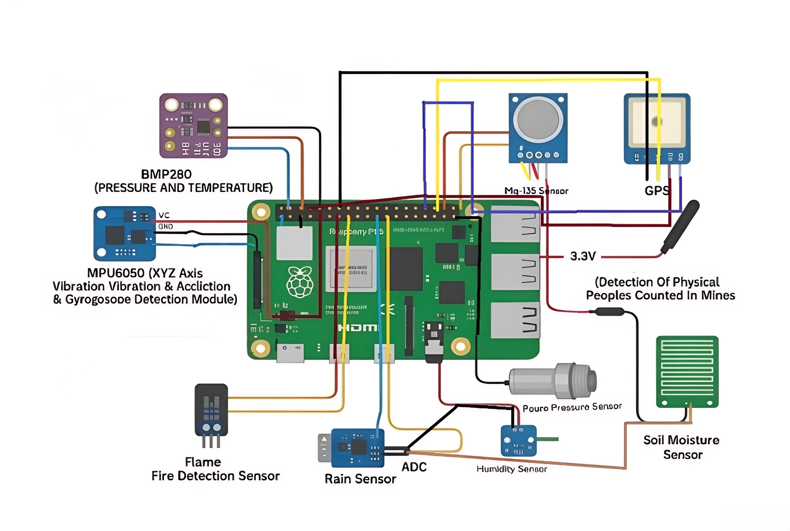
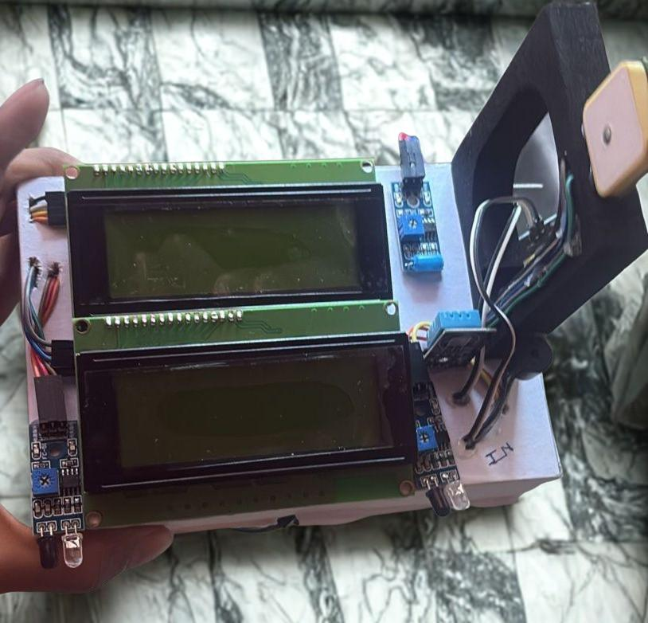

From Sensors ➝ Cloud ➝ Frontend ➝ User
flowchart TD
A["1️⃣ Hardware
(Sensors)
Collects live data from temperature, humidity, soil moisture, rain, and GPS sensors."]
B["2️⃣ Data Conversion
(Python Script)
Reads Arduino serial data, converts to JSON, prepares for transmission."]
C["3️⃣ Data Transmission
(HTTP POST)
Sends JSON to Flask backend via /upload endpoint."]
D["4️⃣ Backend Processing
(Flask Server)
Receives, stores, checks triggers, exposes /data API."]
E["5️⃣ Frontend (Web Interface)
HTML/JS dashboards fetch live data, update Login, Dashboard, Risk Analysis pages."]
F["6️⃣ Dashboard Visualization
Displays live readings + line charts (temperature, humidity) via Chart.js."]
G["7️⃣ Risk Analysis Engine
Algorithm processes sensor values, calculates risk probability, identifies main factors, logs triggers."]
H["8️⃣ User Interaction
Authorized users monitor live data, analyze risks, and trigger alerts in emergencies."]
I["9️⃣ Deployment & Access
System deployed on Render (cloud). Accessible securely from anywhere."]
J["🔮 10. Future Extension
Email/SMS alerts to notify stakeholders instantly when risks breach thresholds."]
%% Connections
A --> B --> C --> D --> E --> F --> G --> H --> I --> J

Figure 1: Circuit Setup

Figure 2: Prototype Hardware